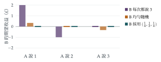

STEP I 1989，第 16 題
繼續之前，請先閱讀題目（原題為英文）。題目載於 STEP Support Programme 的題目資料庫： step.maths.org/questions/89-s1-q16
引子
玩「包剪揼」時，任何固定的出法都會被對手利用：每次都出揼（石頭），對手很快便學會出包（布）。唯一穩妥的策略就是隨機出手。本題是一個更精細的版本：各種結果的得失並不相等，怎樣隨機化才對也並不明顯。結果發現，只要以概率 \(\frac14\)、\(\frac12\)、\(\frac14\) 分別猜 \(1\)、\(2\)、\(3\)，不論對手怎樣做，玩家都可以保證長遠而言不會輸錢。
這讓我們初次窺見馮紐曼（John von Neumann）在 1928 年提出的極小極大定理（minimax theorem），它是博弈論（game theory）的奠基結果：在任何一方所得即另一方所失的二人博弈中，雙方各有一個隨機化策略（randomised strategy），能保證在對手發揮得完美無瑕時，仍取得可能範圍內的最佳結果。
動筆之前
寫出一個表，列出每一對猜測之下 B 贏得的金額（B 的猜測列於左側，A 的猜測列於頂端）。
按規則逐一推算（例如，若 B 說 \(1\) 而 A 說 \(3\)，兩數相差 \(2\)，說出較小數的 B 要付 £2）：
| B \(\backslash\) A | \(1\) | \(2\) | \(3\) |
|---|---|---|---|
| \(1\) | \(0\) | \(+1\) | \(-2\) |
| \(2\) | \(-1\) | \(0\) | \(+1\) |
| \(3\) | \(+2\) | \(-1\) | \(0\) |
這個表是反對稱（antisymmetric）的（把兩位玩家對調，正負號便會改變），所以這個博弈是公平的，意思是雙方都沒有與生俱來的優勢。
逐步解題
階段 1 對付固定的猜測
若 A 每次都說 \(1\)，B 應該說 \(3\)，每局贏 £2。若 A 每次都說 \(2\)，B 說 \(1\)，贏 £1。若 A 每次都說 \(3\)，B 說 \(2\)，贏 £1。任何固定的猜測都會被對手利用。
階段 2 對付隨機的猜測
若 A 以均勻的概率隨機猜測，當 B 說 \(j\) 時，B 的期望收益（expected gain）是多少？（求表中第 \(j\) 行的平均值。）
各行的平均值分別是：\(j = 1\) 時為 \(\frac13(0 + 1 - 2) = -\frac13\)，\(j = 2\) 時為 \(0\)，\(j = 3\) 時為 \(\frac13(2 - 1 + 0) = \frac13\)。所以 B 每局贏得金額的期望值是 \[-\tfrac13b_1 + 0\cdot b_2 + \tfrac13b_3,\] 當 \(b_3 = 1\) 時取得最大值：每次都說 \(3\)，平均每局贏 \(\frac13\) 鎊。均勻的隨機化並不能保護 A。
階段 3 一般情況
現在設 A 以概率 \(a_j\) 說 \(j\)。把 B 贏得金額的期望值按 A 的猜測歸項：\(a_1\) 的係數（即第 \(1\) 列以 \(b_j\) 為權的加權平均）是甚麼？
沿着表中各列由上而下讀， \[\text{B 贏得金額的期望值} = (-b_2 + 2b_3)a_1 + (b_1 - b_3)a_2 + (-2b_1 + b_2)a_3,\] 所以 \(X = -b_2 + 2b_3\)，\(Y = b_1 - b_3\)，\(Z = -2b_1 + b_2\)。
你能令三者同時為零嗎？（共有三條方程，但它們並非獨立；為甚麼？）
它們並非獨立：\(X + 2Y + Z = 0\) 恆成立（請自行驗證）。所以由 \(Y = 0\) 得 \(b_1 = b_3\)，由 \(X = 0\) 得 \(b_2 = 2b_3\)，兩者合起來便迫使 \(Z = 0\) 亦成立。再配合 \(b_1 + b_2 + b_3 = 1\)： \[b_1 = \tfrac14, \qquad b_2 = \tfrac12, \qquad b_3 = \tfrac14,\] 於是 \(X = Y = Z = 0\)。這樣，不論 \(a_j\) 取甚麼值，B 贏得金額的期望值都是 \(0\)，B 長遠而言不會有任何損失。■

回顧
寫出得失表。所有推理都圍繞一個 \(3 \times 3\) 矩陣的行和列。
純策略（pure strategy）會被對手利用。面對任何固定的猜測，甚至面對均勻隨機的猜測，對手都有一個有利可圖的應對方法。
拉平。穩妥的策略令對手選甚麼都沒有分別：A 的每一種選擇都帶來相同的期望結果。
背後的數學
極小極大定理
在一個二人零和（zero-sum）博弈中，設得失矩陣（payoff matrix）為 \(M\)，B 選取概率 \(\mathbf{b}\)，A 選取概率 \(\mathbf{a}\)，則 B 贏得金額的期望值是 \(\mathbf{b}^{\mathsf T}M\mathbf{a}\)。馮紐曼的極小極大定理指出 \[\max_{\mathbf b}\min_{\mathbf a}\mathbf{b}^{\mathsf T}M\mathbf{a} = \min_{\mathbf a}\max_{\mathbf b}\mathbf{b}^{\mathsf T}M\mathbf{a}.\] 用文字說：B 預先公開自己的隨機化策略而仍能保證取得的金額，等於 A 預先公開自己的策略而能把 B 壓制到的金額。這個共同的數值稱為博弈的值（value）。在本題中，由反對稱性可知博弈的值是 \(0\)，而策略 \((\frac14, \frac12, \frac14)\) 對雙方都是最優的。這個定理可用線性代數（linear algebra）和凸性（convexity）證明（它等價於線性規劃（linear programming）的對偶定理），而它推廣到多人博弈的版本，即納殊均衡（Nash equilibrium），為納殊（John Nash）贏得諾貝爾經濟學獎。
為甚麼要隨機化？
這裏的隨機性無關運氣，而是關乎資訊。如果 B 的選擇可以被預測，A 便能加以利用；B 以恰當的概率隨機選擇，既令自己的選擇無從預測，又確保任何預測都幫不了對手。現實中的例子包括足球的十二碼罰球——對職業球員的研究發現，主射球員和守門員在左右兩邊之間隨機選擇，比例與博弈論的最優值十分接近——以及網球的發球。
馮紐曼在 1928 年證明了極小極大定理，論文題為「On the theory of games of strategy」（論策略博弈的理論），研究動機來自撲克，因為撲克中的「偷雞」（bluffing，即虛張聲勢）正是一種隨機化。1944 年，他與經濟學家 Oskar Morgenstern 出版了 Theory of Games and Economic Behavior（博弈論與經濟行為），博弈論自此成為一門學科。馮紐曼後來憶述，他一直視極小極大定理為關鍵結果，沒有它，就沒有值得發表的博弈理論。
思維技巧
當任何固定的選擇都會被對手利用時，就隨機選擇，而所用的概率要令對手無論選哪一項都沒有分別。
在大學裏，博弈論、線性規劃和演算法理論都會用到這個想法。例如，隨機演算法（randomised algorithm）會作出任何對手都無法預測的隨機選擇，藉此防範最壞情況的輸入。
延伸練習
A 的最佳應對。若 B 採用 \((\frac14, \frac12, \frac14)\)，證明 A 的每一種策略所得的期望值都是 \(0\)。若 B 改用 \((\frac13, \frac13, \frac13)\)，求 A 的最佳應對。
包剪揼。寫出「包剪揼」的得失矩陣，並求最優策略。為甚麼這裏的最優策略是均勻的，而本題的卻不是？
唯一性。證明 \((\frac14, \frac12, \frac14)\) 是 B 能保證不輸的唯一策略。（提示：它必須令 \(X\)、\(Y\)、\(Z\) 全部非負；利用 \(X + 2Y + Z = 0\)。）
改動後的博弈。若相差 \(2\) 時的罰款由 £2 改為 £3，求最優策略。
延伸閱讀
Ken Binmore, Playing for Real（Oxford University Press）。一本詳盡而平易近人的博弈論入門書。
Avinash Dixit & Barry Nalebuff, The Art of Strategy（Norton）。以體育和商業的例子講解博弈論。
William Poundstone, Prisoner’s Dilemma（Anchor）。馮紐曼、博弈論與冷戰。